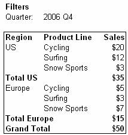
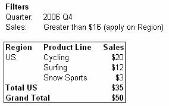

| Working with Filters |
What Is a Filter?Filters are used to restrict (limit) the data that is presented in a report. Let's look at some examples of reports with the data limited by a variety of filters. Example 1: This report shows sales by product line. The filter on Quarter restricts the data so that only sales for the 4th quarter in 2006 are shown. Example 2: If we add a regional filter of Europe, then the report only displays data pertaining to European sales in the 4th quarter of 2006. Example 3: We can also add a filter on a field that is displayed in the report. If we add a filter on the Product Line field to exclude Surfing, then the report only displays data pertaining to European sales in the 4th quarter of 2006 that are not in the surfing product line. About Pentaho FiltersPentaho Analyzer offers the following options for filtering reports:
Text Field FiltersThe dialog box for filters on text fields lets you choose between two types of filters:
Note: Typically, the list of possible values contains all available values although sometimes the list is narrowed down due to a filter on another field that is part of the same field hierarchy. (See About Field Hierarchies). This makes it easier for you to browse only values that are relevant. For example, if you have the filter Year=2006, then the filter dialog for Quarters will only contain four checkboxes - the four quarters for 2006. When you filter on time periods you have three options:
Numeric FiltersYou can restrict report data by applying conditions (e.g. Show me all product lines with sales revenue greater than 500) to number fields. There are two flavors of the numeric filter:
When you create a numeric filter, you specify:
Example 1: The following report shows sales by region and product line without a numeric filter:

Example 2: Now let's filter the report to show only data where sales revenue is above $12 for each product line. The filter removes any product lines that do not meet that criteria. Also note that the filter acts on sales for 2006 Q4 (as opposed to sales for all time periods). Compare this to a filter that applies to each Region. The filter below removes regions.

Viewing and Editing FiltersTo view the filters that are applied to a report, click the Show Filters button to display the Filters pane. To edit an existing filter, click the Edit filter symbol next to the filter in the Filters pane. Adding a FilterA filter always acts on a field, so the first step is always to select a field. To add a new filter, use one of the following methods:
How Filters Work TogetherFilters are applied in the following order:
Another way to express this is: All text field filters are applied first (#1) creating a first "invisible" version of the report. Second, Greater/Less than filters are applied on this invisible report (#2), and -- finally -- based on this report, the Top 10 filter is applied (#3). When Your Report Does Not Display Any DataPlease refer to the section When your Report Does Not Display Any_Data in the Fields chapter. |
Related Topics |